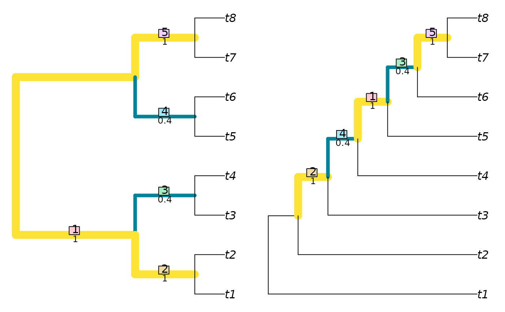

NyeSimilarity() and NyeSplitSimilarity() implement the
Generalized Robinson–Foulds
tree comparison metric of Nye et al. (2006)
.
In short, this finds the optimal matching that pairs each branch from
one tree with a branch in the second, where matchings are scored according to
the size of the largest split that is consistent with both of them,
normalized against the Jaccard index.
A more detailed account is available in the
vignettes.
Usage
NyeSimilarity(
tree1,
tree2 = NULL,
similarity = TRUE,
normalize = FALSE,
normalizeMax = !is.logical(normalize),
reportMatching = FALSE,
diag = TRUE
)
NyeSplitSimilarity(
splits1,
splits2,
nTip = attr(splits1, "nTip"),
reportMatching = FALSE
)Arguments
- tree1, tree2
Trees of class
phylo, with leaves labelled identically, or lists of such trees to undergo pairwise comparison. Where implemented,tree2 = NULLwill compute distances between each pair of trees in the listtree1using a fast algorithm based on Day (1985) .- similarity
Logical specifying whether to report the result as a tree similarity, rather than a difference.
- normalize
If a numeric value is provided, this will be used as a maximum value against which to rescale results. If
TRUE, results will be rescaled against a maximum value calculated from the specified tree sizes and topology, as specified in the "Normalization" section below. IfFALSE, results will not be rescaled.- normalizeMax
When calculating similarity, normalize against the maximum number of splits that could have been present (
TRUE), or the number of splits that were actually observed (FALSE)? Defaults to the number of splits in the better-resolved tree; setnormalize = pmin.intto use the number of splits in the less resolved tree.- reportMatching
Logical specifying whether to return the clade matchings as an attribute of the score.
- diag
Logical specifying whether to return similarities along the diagonal, i.e. of each tree with itself. Applies only if
tree2is a list identical totree1, orNULL.- splits1, splits2
Logical matrices where each row corresponds to a leaf, either listed in the same order or bearing identical names (in any sequence), and each column corresponds to a split, such that each leaf is identified as a member of the ingroup (
TRUE) or outgroup (FALSE) of the respective split.- nTip
(Optional) Integer specifying the number of leaves in each split.
Value
NyeSimilarity() returns an array of numerics providing the
distances between each pair of trees in tree1 and tree2,
or splits1 and splits2.
Details
The measure is defined as a similarity score. If similarity = FALSE, the
similarity score will be converted into a distance by doubling it and
subtracting it from the number of splits present in both trees.
This ensures consistency with JaccardRobinsonFoulds.
Note that NyeSimilarity(tree1, tree2) is equivalent to, but
slightly faster than, JaccardRobinsonFoulds
(tree1, tree2, k = 1, allowConflict = TRUE).
Normalization
If normalize = TRUE and similarity = TRUE, then results will be rescaled
from zero to one by dividing by the mean number of splits in the two trees
being compared.
You may wish to normalize instead against the number of splits present
in the smaller tree, which represents the maximum value possible for a pair
of trees with the specified topologies (normalize = pmin.int); the
number of splits in the most resolved tree (normalize = pmax.int);
or the maximum value possible for any pair of trees with n leaves,
n - 3 (normalize = TreeTools::NTip(tree1) - 3L).
If normalize = TRUE and similarity = FALSE, then results will be rescaled
from zero to one by dividing by the total number of splits in the pair
of trees being considered.
Trees need not contain identical leaves; scores are based on the leaves that
trees hold in common. Check for unexpected differences in tip labelling
with setdiff(TipLabels(tree1), TipLabels(tree2)).
References
Day WHE (1985).
“Optimal algorithms for comparing trees with labeled leaves.”
Journal of Classification, 2(1), 7–28.
doi:10.1007/BF01908061
.
Nye TMW, Liò P, Gilks WR (2006).
“A novel algorithm and web-based tool for comparing two alternative phylogenetic trees.”
Bioinformatics, 22(1), 117–119.
doi:10.1093/bioinformatics/bti720
.
See also
Other tree distances:
HierarchicalMutualInfo(),
JaccardRobinsonFoulds(),
KendallColijn(),
MASTSize(),
MatchingSplitDistance(),
NNIDist(),
PathDist(),
Robinson-Foulds,
SPRDist(),
TreeDistance()
Examples
library("TreeTools")
NyeSimilarity(BalancedTree(8), PectinateTree(8))
#> [1] 3.8
VisualizeMatching(NyeSimilarity, BalancedTree(8), PectinateTree(8))

NyeSimilarity(as.phylo(0:5, nTip = 8), PectinateTree(8))
#> [1] 3.166667 2.750000 2.750000 2.500000 2.450000 2.500000
NyeSimilarity(as.phylo(0:5, nTip = 8), similarity = FALSE)
#> 1 2 3 4 5
#> 2 1.333333
#> 3 1.333333 1.333333
#> 4 2.166667 2.333333 2.333333
#> 5 2.333333 2.166667 2.333333 1.000000
#> 6 2.000000 2.000000 1.500000 1.500000 1.500000